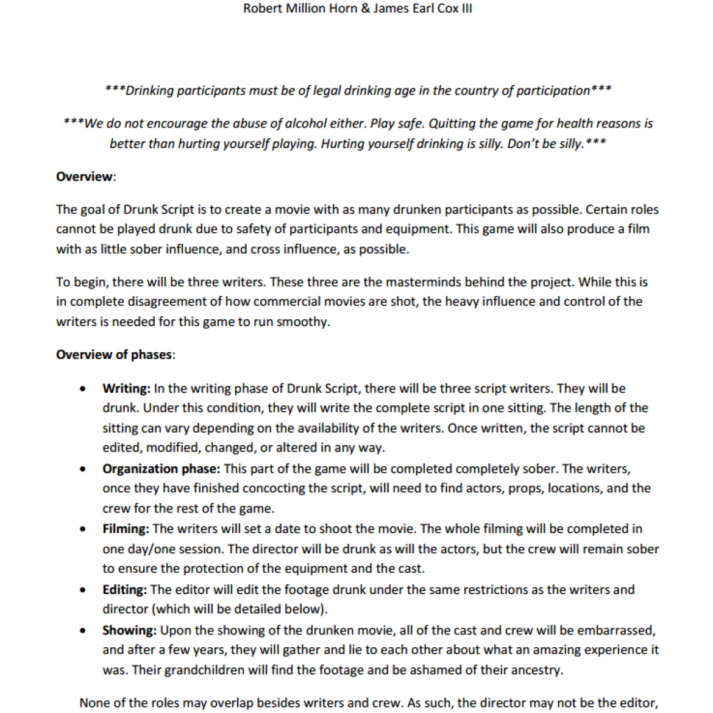

A drinking game that results in a film. This game is still fairly mold-able. We work out a few kinks with each play. We have yet to fully complete a round of the game.

Game 25/100
Drunk Script 1.0
A drinking game that results in a film. This game is still fairly mold-able. We work out a few kinks with each play. We have yet to fully complete a round of the game.
Year2013
Development2 months
AvailabilityPlayable